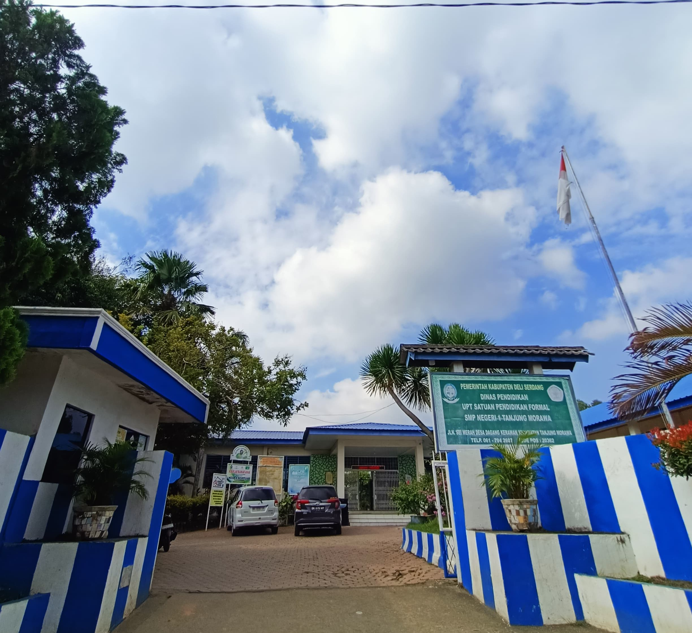

UPT SPF SMP Negeri 1 Tanjung Morawa merupakan lembaga pendidikan jenjang SMP di Kabupaten Deli Serdang yang berada di lingkungan kawasan industri dan pertanian bunga dengan nilai sosial budaya yang kuat. Mayoritas murid berasal dari keluarga petani bunga, pedagang, pekerja pabrik, dan sebagian ASN. Meskipun menghadapi keterbatasan ekonomi, semangat belajar dan dukungan masyarakat menjadi kekuatan sekolah dalam menciptakan pendidikan inklusif, partisipatif, dan berkarakter. Sejak 2025, sekolah berkomitmen menerapkan Pembelajaran Mendalam (Deep Learning) yang berkesadaran, bermakna, dan menggembirakan. Pembelajaran mengintegrasikan Profil Lulusan dan 7 Kebiasaan Murid Indonesia Hebat (KAIH) untuk membentuk lulusan unggul, berkarakter, mandiri, dan siap menghadapi masa depan.
Siswa Aktif
Laki-Laki
Perempuan
" Terwujudnya Murid Sehat, Religius, Berkarakter, Cerdas, Peduli Lingkungan, Berdaya Saing Global Secara Berkelanjutan. "